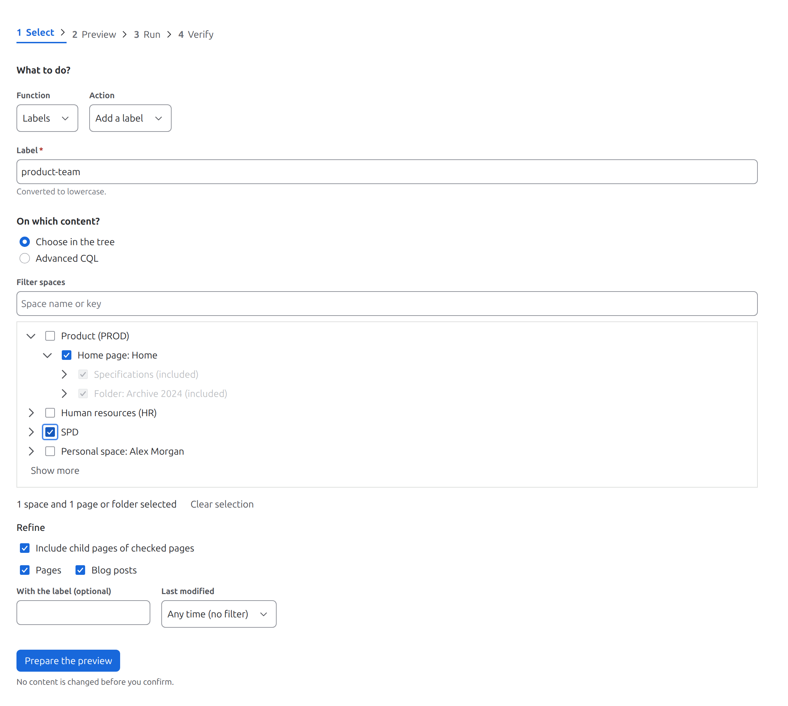
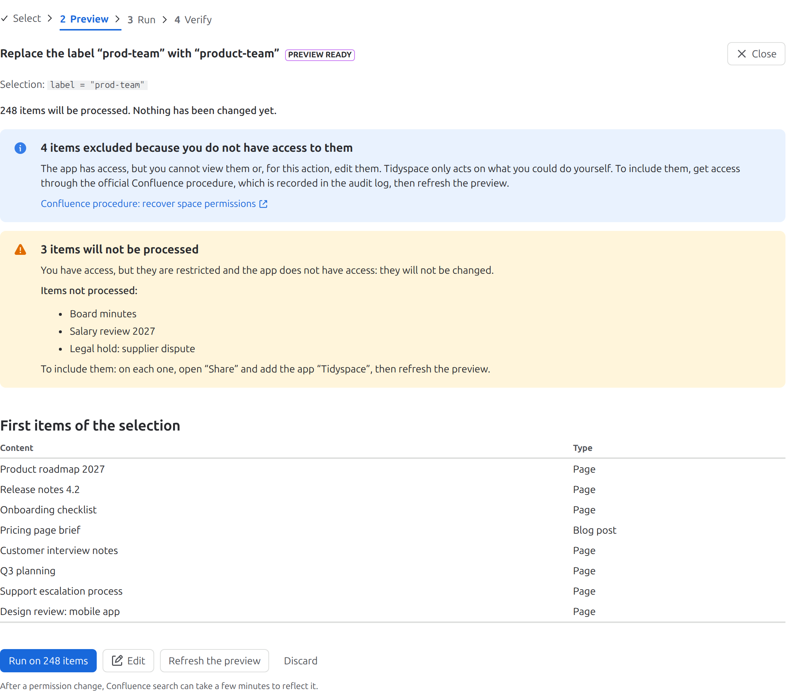
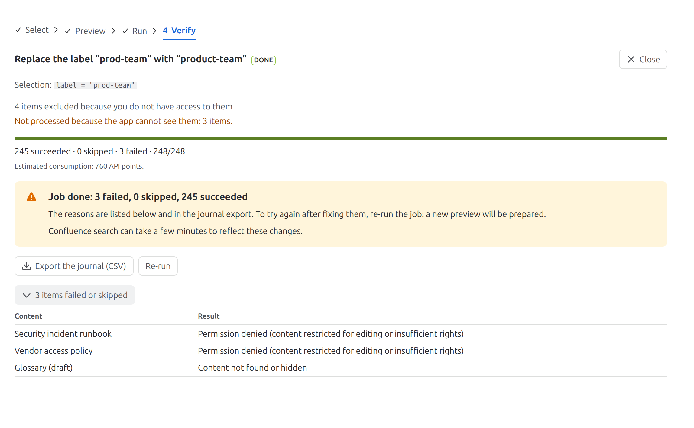
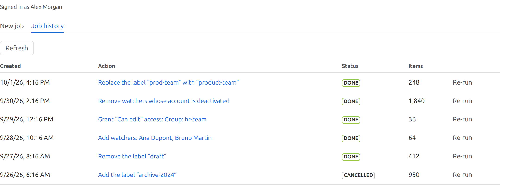
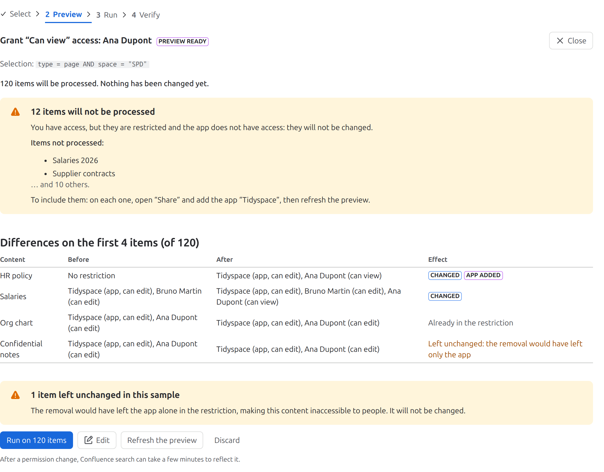

Tidyspace documentation
How to make bulk changes to labels, watchers and restrictions in Confluence Cloud, safely.
Quick start
- Install Tidyspace from the Atlassian Marketplace (a site administrator does this).
- In Confluence, open Settings (gear icon), then Tidyspace.
- Choose the action (labels, watchers or restrictions) and the content.
- Check the preview: nothing is changed until you run.
- Run the job, then check the result in the panel or the CSV journal.
I want to…
| I want to… | Go to |
|---|---|
| Rename or merge a label across the whole site | Labels |
| Remove watchers whose accounts are deactivated | Watchers |
| Give or remove access to pages | Restrictions |
| Understand why pages are missing from the preview | No access, app cannot see them |
| Run an old job again | Job history and re-run |
1. Install and open Tidyspace
Install: a site administrator (organization or site admin) installs Tidyspace from the Atlassian Marketplace on the Confluence Cloud site. Confluence lists the permissions the app asks for during installation; the security page explains them.
Who can use it: people with the Confluence administrator permission on the site. Everyone else sees a message that the app is reserved to Confluence administrators; this is checked for every action, not only in the interface.
Where to find it: in Confluence, open Settings (the gear icon), then select Tidyspace in the sidebar. The interface follows your Confluence language: French if your profile is in French, English otherwise.
Tidyspace acts on pages and blog posts. Attachments, comments and other content types are never changed.
2. How a job works
Every change is a job, which goes through four steps, shown at the top of the screen:
- Select the action and the content.
- Preview what will change. Nothing is written at this step.
- Run the job after confirming. It processes the content in batches of 50.
- Verify the result of each item, in the panel or in the CSV journal.
3. Step 1: select

What to do
Choose the function (Labels, Watchers or Restrictions), then the action. Each function is described below: labels, watchers, restrictions.
On which content
Choose in the tree (default):
- check a space to select all its content;
- expand a space to check pages or folders. With Include child pages of checked pages (on by default), everything under a checked page or folder is included;
- use Filter spaces to find a space by name or key. Personal spaces are listed too;
- every page shows an expand arrow; a page without children shows “No child pages” when expanded.
Refine the selection:
- Pages and Blog posts: the content types to include;
- With the label: only content that already has this label;
- Last modified: Recent (less than 30 days, 3 months, 6 months or 1 year ago) or Old (more than that). “Old, more than 1 year” is a quick way to find stale content.
Advanced CQL: write a Confluence Query Language query, for example type = page AND space = "ABC" AND lastmodified < now("-180d"). It is run as is; only pages and blog posts it returns are processed.
Select Prepare the preview. No content is changed at this point.
4. Step 2: preview

Preparing
Tidyspace first collects the content the app can reach, then checks your own access, item by item. The counter moves at each stage; for 1,000 pages, preparing takes about 40 seconds. Keep the page open until the preview is ready.
What the preview shows
- “N items will be processed. Nothing has been changed yet.” This is a real count of the items, not a search estimate.
- The first items of the selection, as a sample.
- Items excluded because you do not have access (see below).
- Items that will not be processed because the app cannot see them (see below).
- For restrictions: the differences before and after on the first items (see restrictions).
Items excluded because you do not have access
Tidyspace only acts on content you could change yourself: content you can view and, for this action, edit (for labels and watchers) or restrict (for restrictions). If the app can reach content that you cannot, that content is excluded. It is only counted: its title is never shown, in the preview, the journal or the export.
To include it, obtain access through the official Confluence procedure (recover space permissions), which is recorded in the audit log, then refresh the preview.
Items the app cannot see
A page restricted for viewing is hidden from every app that is not part of its restriction. Tidyspace lists these items (up to 50 titles, with the total). To include them: on each page, open Share, add the app Tidyspace (choose the app itself, never an email address), then refresh the preview.
Other preview messages
- No content to process: the selection is empty, or none of it is accessible to both you and the app. Change the selection.
- Selection too large: you have access to more than 20,000 items in the selection. Nothing is kept; narrow the selection by space, page, label or date.
Refresh, edit or discard
- Refresh the preview recomputes everything with the current content and access. Use it after changing a permission or a restriction.
- Edit returns to the form with the same choices; the new preview replaces the old one.
- Discard abandons the preview. Nothing was changed.
5. Step 3: run
Select Run on N items, then confirm. The job processes the selection in batches of 50, in the background: you can close the page and come back later from Job history.
- Paused: Confluence limits how many requests apps can make per hour. When the limit is reached, the job pauses and resumes automatically; no action is needed.
- Cancel the job: the current batch finishes, then the job stops. Batches already processed stay applied.
- Interrupted: if the job has not progressed for 20 minutes (for example, a platform event was lost), select Resume. It restarts from the batch where it stopped, without redoing what is done.
- Stopped: before each batch, Tidyspace checks that the person who started the job still has an active account and is still a Confluence administrator. If not, the job stops; batches already processed stay applied.
6. Step 4: verify

At the end, the panel shows the counts (succeeded, skipped, failed) and what to do next. The failed and skipped items are listed with their reason (the first 100; the export has them all).
Export the journal (CSV) downloads one line per item: title, ID, space, type, result, reason, link and batch. The file is in your language and opens directly in Excel: columns separated by ; in French and , in English, UTF-8 encoding.
Confluence search can take a few minutes to show the changes: for example, a page search by the new label may not find every page right away. The journal is the reference.
Results
| Result | Meaning and what to do |
|---|---|
| Permission denied | The content is restricted for editing, or the app lacks a permission (see watchers). Fix the access, then re-run the job. |
| Content not found or hidden | The content was deleted, moved to the trash or restricted after the preview. |
| Label absent: nothing to remove | Skipped (removal): the content did not have the label. |
| Partial | Replacement: the new label was added, but the old one could not be removed. Re-run the job to finish. |
| Already in the restriction / Not in the restriction | Skipped: nothing to change. |
| Left unchanged: the removal would have left only the app | Refused on purpose, see restrictions. |
| No deactivated watcher | Skipped: no watcher to remove. |
| Confluence server error, Conflict, Request refused | Confluence refused or failed the change. Re-run the job later; if it persists, contact support. |
7. Job history and re-run

Job history lists the 20 most recent jobs of the site. Select a job’s name to open it.
Re-run prepares a new preview of the same job, based on the content and access of today. Nothing runs without your confirmation. Use it to retry after fixing failures, or to repeat a job regularly.
Jobs of other administrators: the details of a job (titles, selection, journal, export) are only visible to the person who prepared it, because they reflect that person’s own access. Other administrators see its status and counts; they can cancel it, or re-run it to get a preview based on their own access.
8. Labels
- Add a label or Remove a label on the selection.
- Replace a label (rename or merge): on each item that has the current label, add the new one, then remove the old one (only once the new one is in place). If the new label already exists on some items, the two labels are merged.
- Across the whole site (replace only, on by default): all content with the current label, in every space. Uncheck it to limit the replacement to a selection.
Labels are converted to lowercase, are 255 characters at most, and cannot contain spaces or the characters :;,.?&[]()#^*@!<>, as in Confluence.
9. Watchers
- Add watchers or Remove watchers: up to 10 people per job. The people added receive Confluence notifications for these items.
- Remove watchers with deactivated accounts: removes deactivated or closed accounts from the watchers. Accounts with an unknown status and apps are left in place.
10. Restrictions
- Grant access with Can view (read only) or Can edit, to up to 10 users and groups. Unrestricted content becomes restricted: only the people listed, the people already in the restriction and the app have access.
- Remove access: the people and groups listed lose their restricted access (view and edit).
The levels are those of the Confluence Share dialog. The preview shows, for the first items, the access before and after the job, with the effect on each item.

Two rules that protect your content
- The app is added with “Can edit” to every restriction it sets. Confluence refuses a restriction that excludes the app that sets it, and an app with view-only access could no longer change the page’s labels or restrictions.
- A removal that would leave only the app able to view or edit a page is refused and reported (“Left unchanged”). Otherwise the page would become inaccessible to people; removing the app as well would lift the restriction entirely.
If the app is in a restriction with “Can view” only, the item fails with a message asking to set the app to “Can edit” through Share, then re-run.
11. Limits
| Limit | Value |
|---|---|
| Items per job (that you have access to) | 20,000; above, the job refuses to start, nothing is truncated |
| Spaces, pages and folders checked in the tree | 200 (check a whole space or use a label instead) |
| Users per watchers job, users and groups per restrictions job | 10 |
| CQL query | 4,000 characters |
| Batch size | 50 items |
| Failed or skipped items shown in the panel | 100 (all of them in the CSV export) |
| Jobs in the history | the 20 most recent |
| Content types | pages and blog posts |
Tidyspace does not archive, move, delete or edit the content of pages, does not change page owners, and cannot reach other people’s drafts.
12. Data kept by Tidyspace
A job keeps the identifiers, titles, types and spaces of the selected items, the people and groups chosen, and the result of each item, so that the job can run, be resumed and be exported. This data stays in the app’s storage on Atlassian’s platform; it is deleted 90 days after the job’s last activity, at which point the job leaves the history. Export the journal before then if you need to keep it. When a person’s Atlassian account is closed, Tidyspace erases their identifier and name from every job within a week (shown as “closed account”). When the app is uninstalled, Atlassian deletes its data after 28 days. Details in the privacy policy.
13. Troubleshooting
“Tidyspace is reserved to Confluence administrators.”
Your account does not have the Confluence administrator permission. Ask a site administrator to grant it (administration of Confluence global permissions).
Pages are missing from the preview.
Check the two messages of the preview: content you cannot access is excluded, and restricted content the app cannot see is listed with the fix. If you just changed a permission or created the pages, wait a few minutes for Confluence search to catch up, then refresh the preview.
The job is “Paused”.
Confluence API limit reached. The job resumes automatically when the limit resets, at most one hour later. No action is needed.
The job is “Interrupted”.
Select Resume. Only the person who prepared the job can resume it.
A search by label still finds the old label after the job.
Confluence search takes a few minutes to update. The journal shows the actual result of each item.
“Stopped before running: an account used by this job was closed.”
One of the people in the job, or its author, closed their Atlassian account, and Tidyspace erased their data. Nothing was changed. Select Re-run to prepare a new preview without that person.
The error says “The Forge job queue refused the request.”
Atlassian’s platform briefly refused to queue the job. Wait a minute and try again. If it keeps happening, check status.atlassian.com, then contact support.
Still stuck? Contact support.